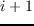
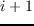

The heuristic sequence optimization uses a multistart, steepest-descent minimization, where thousands of random starting configurations are minimized,leading to a large collection of local energy minima [#!Wernisch00!#,#!Schmidt08!#].
One ``heuristic cycle''proceeds as follows: an initial amino acid sequence and set of sidechain rotamers are chosen randomly. These are improved in a stepwise way. At a given amino acid position  , the best amino acid type and rotamer are selected, with the rest of the sequence held fixed. The same is done for the following position
, the best amino acid type and rotamer are selected, with the rest of the sequence held fixed. The same is done for the following position  , and so on, performing multiple passes over the amino acid sequence until the energy no longer improves or a set, large number of passes is reached (500 passes). The final sequence, rotamer set, and energy are output, ending the cycle. Below, we typically perform 100.000 heuristic cycles for each protein.
, and so on, performing multiple passes over the amino acid sequence until the energy no longer improves or a set, large number of passes is reached (500 passes). The final sequence, rotamer set, and energy are output, ending the cycle. Below, we typically perform 100.000 heuristic cycles for each protein.
mignon
2017-11-30